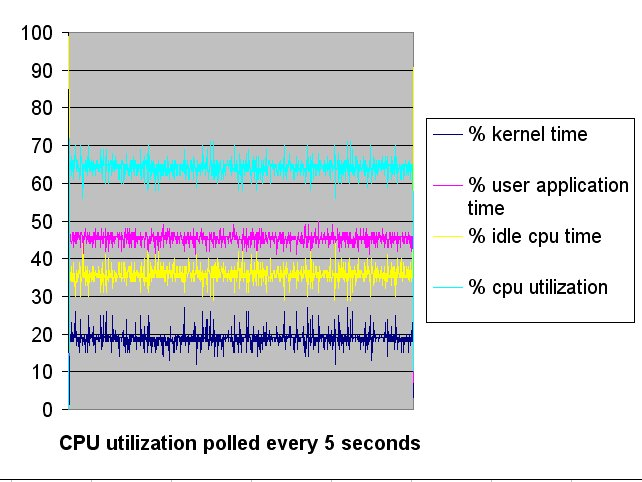
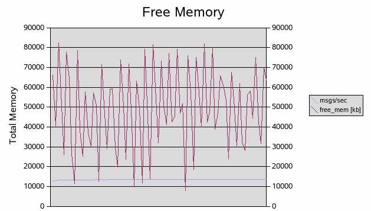

Scott Marlow --- Novell, Inc.
Alex Fu --- Novell, Inc.
JGroups version 2.2.9 includes a new implementation of TCP_NIO which is compared against the performance of TCP (blocking) implementation.
The JGroups TCP protocol implementation requires a Java thread for handling every incoming connection because read/write operations are blocking. The JGroups TCP_NIO protocol is based on the “new I/O” (NIO) APIs which allow a Java thread to handle one or more connections in non-blocking mode. TCP_NIO should be more scalable for large clusters than TCP.
One way to avoid contention in a multi-threaded program is by not sharing variables between threads. This avoids the need to enter a synchronization block before reading or writing to the variable (improving scalability).
|
NOT SHARED |
COMMENT |
|
Read/Write Selector |
Each read/write handler thread has its own Selector for registering socket channels and determining socket channel read/write status. |
|
Header ByteBuffer |
The buffer for reading/writing the fixed size header can be reused by each read/write handler thread. By not sharing these buffers, avoid contention on a shared buffer pool that could have been used (at the cost of higher memory consumption). |
|
List of WriteRequest Buffers per connection |
Application threads put a request to write data into the Write Handler Queue. The Write Handler thread moves the request onto the WriteRequest list for which the Write Handler will process. |
|
Pending Write Count |
Keeps careful track of the number of pending write operations. Write Handler blocks on Write Handler Queue when this is zero otherwise on Selector.select(). |
The naive
expectation is that NIO doesn't require you to handle write
operations in a non-blocking fashion. After all, why shouldn't you
be able to enable non-blocking mode for a socket connection and only
handle read operations as non-blocking. The truth is when you enable
non-blocking mode, write operations will never block, whether you
register your interest in OP_WRITE or not. Failure to handle write
operations properly will result in a busy loop when writing to the
socket connection. Of course, TCP_NIO is handling write operations
as non-blocking operations.
NIO has the concept of a Selector which is a multiplexer of channels. The Selector “select()” returns an indication of which channels are ready (data is available to read or channel is ready for write operations). Socket connections have to be registered with the Selector along with the “interested in” bit mask. To indicate interest in write operations, “SelectionKey.OP_WRITE” is included in the Selector “register()” call. The call to “register()” may block for a while if another thread is in the middle of a call to the Selector “select()”. This can be a performance bottleneck in the NIO application. TCP_NIO deals with this by doing the Selector “register()” in the same thread that is already doing the Selector “select()”.
After the write operation is completed, TCP_NIO leaves the socket connection registered but clears the OP_WRITE flag (it is enabled before the next write). This minimizes the number of times that the socket connection is registered with the Selector. Alternative is to register/cancel the socket with the Selector every time a write operation needs to happen (performance will suffer with this approach).
For read operations, TCP_NIO always wants to know when there is data to be read. The “SelectionKey.OP_READ” is included in the Selector “register()” call and left enabled until the socket connection is closed.
TCP_NIO creates separate threads for reading/writing from/to the socket connections. NIO allows a single thread to handle many different “registered” socket connections, however, NIO only deals with NIO type events. Other event sources also need to be handled in the NIO reader/writer threads.
The read handling threads need to deal with the following events {Data_Available, New_Connection }. The ReadHandler thread learns of Data_Available event by calling the Selector “Select()” call. The ReadHandler learns of New_Connection by reading from a queue that contains “new connection” event notifications. The read handler code has a hard time servicing the queue as most time is spent blocking in the Selector “select()” call. The ReadHandler does a special dance, to accommodate. After each read operation, the queue is serviced if and only if there are New_Connection events in it. The other part of the dance is to issue a Selector “wakeup()” call right after adding a New_Connection to the queue, ensuring that the event is processed in a timely fashion.
The write handling threads need to deal with the following events { Ready_For_Write, Write_Buffer_Request }. The WriteHandler thread learns of Write_Buffer_Request by reading from a queue that contains requests to send data. The WriteHandler thread learns that the network device is ready to be written to when Ready_For_Write is obtained by calling the Selector “Select()” call. Unlike the ReadHandler, the WriteHandler assumes that the Selector “Select()” call will return soon enough for any new Write_Buffer_Request events to be read from the queue.
The JGroups PerfTests (http://wiki.jboss.org/wiki/Wiki.jsp?page=PerfTests) measures the time to send N messages to all members of a group. It computes messages/sec and throughput for each member in the group. Each machine was configured to be a sender and receive every message sent. Each machine sends 1,000,000 messages.
|
Test Run # |
Number of messages read per second |
|
1 |
13402 |
|
2 |
13155 |
|
3 |
13344 |
|
4 |
13107 |
|
Test Run # |
Number of messages read per second |
|
1 |
13490 |
|
2 |
13462 |
|
3 |
13476 |
|
4 |
13440 |

A 20 million message test was also run to ensure that there are no memory leaks.

TCP_NIO has configuration settings for the number of reader, writer and processor threads. Generally, setting the number of threads to a smaller number is better than a larger number. As a starting point, try:
reader_threads = 8 * number of CPUs
writer_threads = 8 * number of CPUs
processor_threads = 8 * number of CPUs
processor_minThreads = 8 * number of CPUs
processor_maxThreads = 8 * number of CPUs
processor_keepAlivetime = -1
processor_queueSize = 100
The reader threads read incoming requests and hand the request off to the processor threads to be handled. The processor threads may be disabled (processor_maxThreads is set to zero) so that the incoming requests are handled in the reader threads.
If processor_minThreads is less than processor_maxThreads, new threads will be created to process requests, if and only if, the processor internal queue has processor_queueSize entries in it. This occurs at the time that the next request needs to be processed.
If the internal queue is full and processor_maxThreads threads are busy, the reader thread will block until one of the processor threads completes its work.
Cluster: 4 Dell Optiplex GX260 machines
CPU: Three Intel Pentium 4 2.26GHz and one Pentium 4 2GHz
Memory: 1GB
OS: SUSE Linux Enterprise Server 9 (kernel: 2.6.5)
Switch: 100Mega bit
<config>
<TCP_NIO bind_addr="164.99.218.115" recv_buf_size="20000000" send_buf_size="640000"
loopback="false" discard_incompatible_packets="true" max_bundle_size="64000"
max_bundle_timeout="30" use_incoming_packet_handler="true"
use_outgoing_packet_handler="true" down_thread="false" up_thread="false"
enable_bundling="true" start_port="7800" use_send_queues="false"
sock_conn_timeout="300" skip_suspected_members="true"/>
<MPING timeout="2000" num_initial_members="3" mcast_addr="229.6.7.8"
bind_addr="164.99.218.115" down_thread="false" up_thread="false"/>
<FD_SOCK down_thread="false" up_thread="false"/>
<pbcast.NAKACK max_xmit_size="60000" use_mcast_xmit="false" gc_lag="10"
retransmit_timeout="100,200,300,600,1200,2400,4800" down_thread="false" up_thread="false"
discard_delivered_msgs="true"/>
<pbcast.STABLE stability_delay="1000" desired_avg_gossip="50000" down_thread="false"
up_thread="false" max_bytes="400000"/>
<pbcast.GMS print_local_addr="true" join_timeout="3000" down_thread="false" up_thread="false"
join_retry_timeout="2000" shun="true"/>
<FC max_credits="2000000" down_thread="false" up_thread="false" min_threshold="0.10"
max_block_time="1000"/>
</config>
num_msgs=1000000 msg_size=1000 num_members=4 num_senders=4
Java(TM) 2 Runtime Environment, Standard Edition (build 1.5.0_05-b05)
Java HotSpot(TM) Client VM (build 1.5.0_05-b05, mixed mode, sharing)”
Shell Script using TCP_NIO:
#!/bin/bash
# see description on http://wiki.jboss.org/wiki/Wiki.jsp?page=PerfTests
export CLASSPATH=./commons-logging.jar:./concurrent.jar:./jgroups-all.jar:$CLASSPATH
export JAVA_OPTS="-Xmx100M -Xms100M -XX:NewRatio=1 -XX:+AggressiveHeap -XX:ThreadStackSize=64 -XX:CompileThreshold=100 -Dcom sun.management.jmxremote -Dresolve.dns=false -Dlog4j.configuration=file:log4j.properties"
java $JAVA_OPTS org.jgroups.tests.perf.Test -sender -config ./configsender.txt -props ./tcp-fast-nio.xml
Shell
Script using TCP:
#!/bin/bash
export
CLASSPATH=./commons-logging.jar:./concurrent.jar:./jgroups-all.jar:$CLASSPATH
export
JAVA_OPTS="-Xmx100M -Xms100M -XX:NewRatio=1 -XX:+AggressiveHeap
-XX:ThreadStackSize=64 -XX:CompileThreshold=100
-Dcom.sun.management.jmxremote -Dresolve.dns=false
-Dlog4j.configuration=file:log4j.properties"
java
$JAVA_OPTS org.jgroups.tests.perf.Test -sender -config
./configsender.txt -props ./tcp-fast.xml
During (org.jgroups.blocks.ConnectionTableNIO) initialization, the server socket is created in non-blocking mode and a background thread started that will accept connections. The reader, writer and processor threads are created to deal with reading, writing and processing requests/responses. Optionally, the processor threads can be disabled and requests are processed in the reader thread.
Accepted socket connections are bound to a reader and writer thread in a round robin fashion. This gives a nice distribution across the threads initially for new connections, but could become unfair over time as members leave/join the group. Consideration was given to use different policies for distributing the load across the threads such as random selection and re-balancing but instead opted for simple r-r.
The ReadHandler “run()” as mentioned earlier, deals with reading events from an internal queue and Selector. ReadOnce() deals with connection handshaking, reading message header and the message payload. The message payload is passed to the request Processor which can be configured to run asynchronously or synchronously. The received message is handled by passing it up the JGroups protocol stack.
The WriteHandler “run()” deals with reading events from an internal queue and Selector. Special care is taken to maintain the counter (m_pendingChannels) of connections that have pending work. The counter is used to determine whether a blocking wait on the queue or Selector should occur. Requests to write messages are queued up and handled by the WriteHandler. The messages are read from the queue and placed on a “per connection” list. The messages on the “per connection” list are written when the connection is available for writing. The sender of the message is notified of the number of bytes sent or of the exception that occurred during the send.
The performance of TCP is a little faster than TCP_NIO in a four node cluster. It is great that TCP_NIO gives close to the same performance as TCP for a small cluster but NIO is expected to show better performance in a large environment (due to reduced number of threads required). The current TCP_NIO implementation is just the start of the process, TCP_NIO will be enhanced as needed to achieve the high scalability desired.